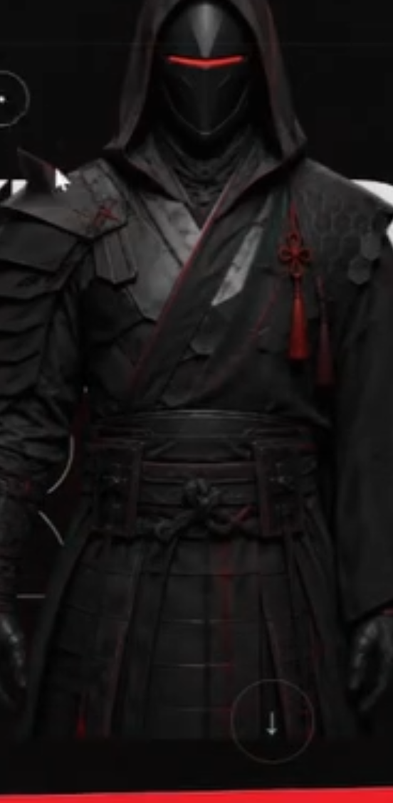
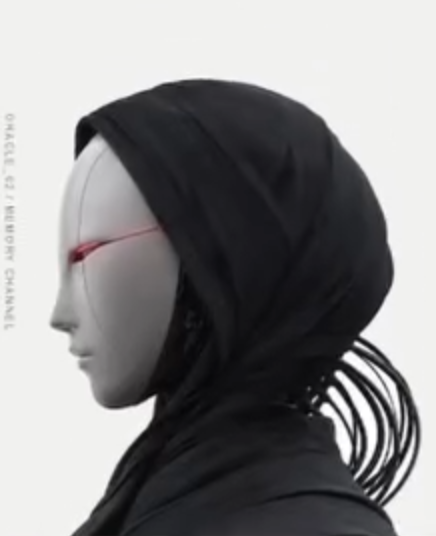
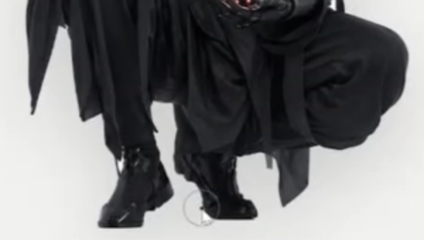
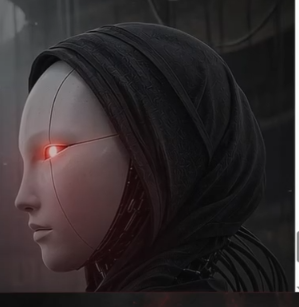

Digital folklore archive
Transmission 00—05
Kuro Frame

A living digital myth
Kuroframe is an archive of signal-born guardians— shaped by lost rituals, machine memory and the space between.

Original forms
Every guardian is built from an individual silhouette, material system and origin.
Living signals
Motion, sound and responsive details allow each identity to shift over time.
Five frequencies
Threshold, memory, structure, connection, return — one archetype per keeper.
Shared memory
Records are written once and read by every form that follows.
02.6 Frequency map
Drag / select
Ritual

The archive is not generated by chance. Each form moves through a deliberate three-part ritual.

The archive opens once per cycle
The Signal
Enter your frequency and the archive will return the guardian that matches it.
Kuroframe — digital folklore archive
Transmission 00—05 · 記憶